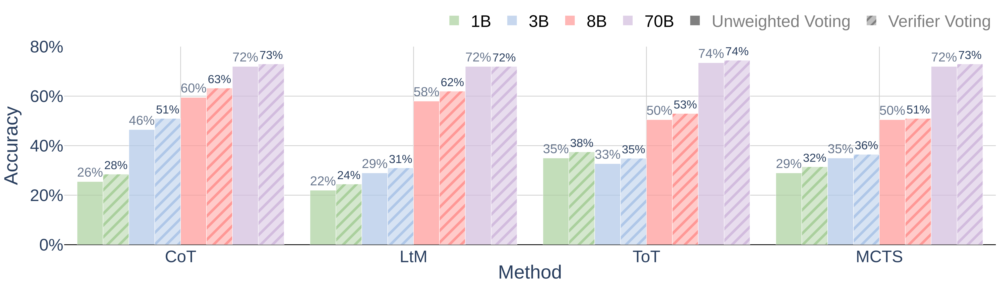
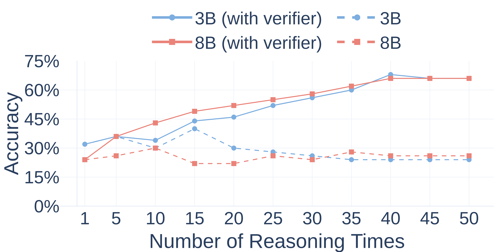

We propose Landscape of Thoughts, a visualization tool that maps reasoning paths in LLMs using perplexity-based features and t-SNE projection, revealing patterns in success and failure cases.
Figure 1. Landscape of thoughts for visualizing the reasoning steps of LLMs.
Large language models (LLMs) excel in tasks like tool use and step-by-step reasoning, but their reasoning processes are not well understood. Reading their generated reasoning texts is time-consuming. Landscape of thoughts approach uses visualization plots to intuitively analyze and clarify the LLM reasoning process for users.
We show the examples of landscape of thoughts: visualization of AQuA using Llama-3.1-70B across different reasoning methods.
The visualization of the reasoning process can be conducted by the following steps.
We qualitatively analyze the landscape of thoughts for different datasets and language models. Besides, we also introduce three quantitative metrics to help understand the behavior of the LLM at different reasoning steps.
Figure 4. Comparing the landscapes and corresponding metrics of four reasoning algorithms (using Llama-3.1-70B on the AQuA dataset).
We can use Landscape of Thoughts to analyze the reasoning process of different algorithms.
Figure 5. Comparing the landscapes and corresponding metrics of different datasets (using Llama-3.1-70B with CoT).
We can use Landscape of Thoughts to analyze the reasoning process of different datasets.
Figure 6. Comparing the landscapes and corresponding metrics of different language models (with CoT on the AQuA dataset).
We can use Landscape of Thoughts to analyze the reasoning process of different models.
Based on the observations from visualization, the landscape of thoughts method has the potential to be adapted to a model to predict any property users observe, here we show examples of using it to predict the correctness of the reasoning paths in Figure 1.
Figure 7. Reasoning accuracy averaging across all dataset.
Then, we investigate the inference-time scaling effect of the verifier by adjusting the number of reasoning paths.
Figure 8. Demonstration of the inference-time scaling effect of the verifier.
Welcome to check our paper for more details of the work. If there is any question, please feel free to contact us.
If you find our paper and repo useful, please consider to cite:
@misc{zhou2025landscapethoughtsvisualizingreasoning,
title={Landscape of Thoughts: Visualizing the Reasoning Process of Large Language Models},
author={Zhanke Zhou and Zhaocheng Zhu and Xuan Li and Mikhail Galkin and Xiao Feng and Sanmi Koyejo and Jian Tang and Bo Han},
year={2025},
eprint={2503.22165},
archivePrefix={arXiv},
primaryClass={cs.LG}
}